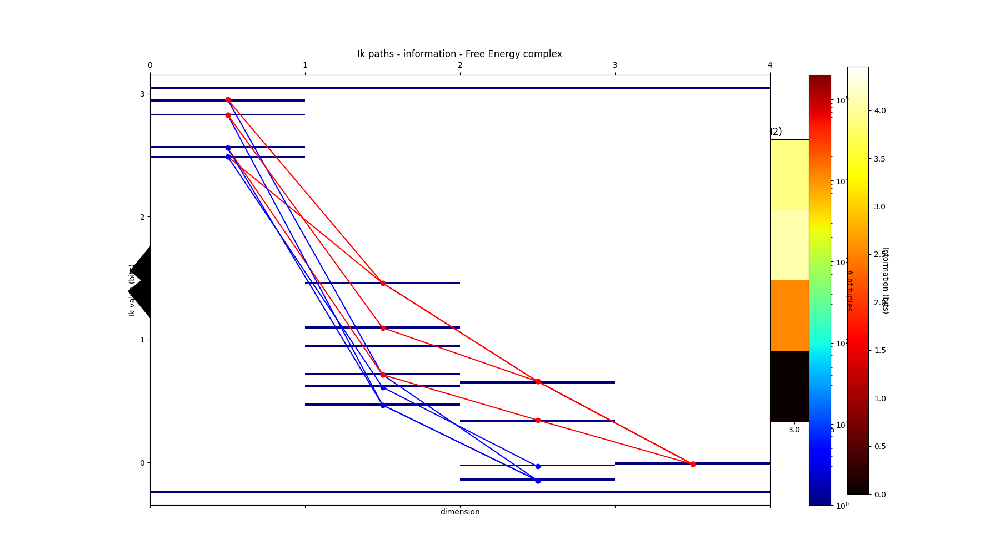
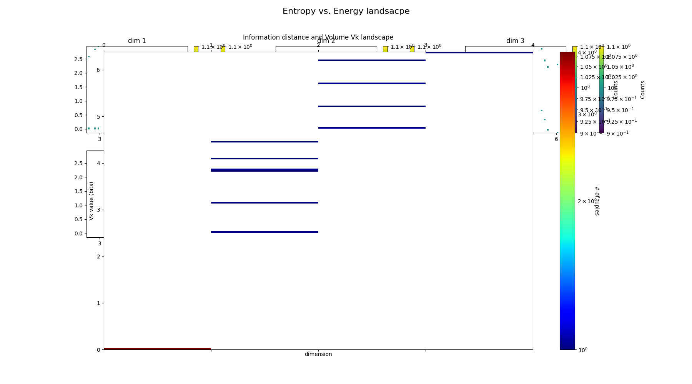
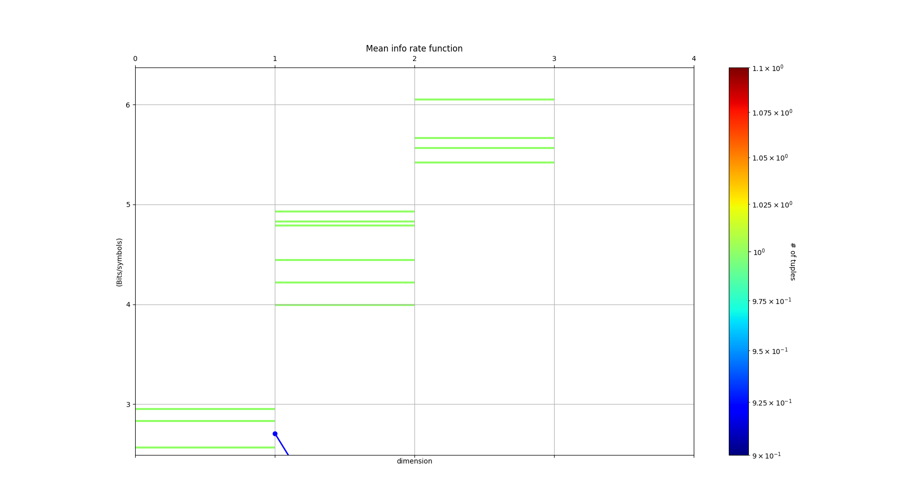
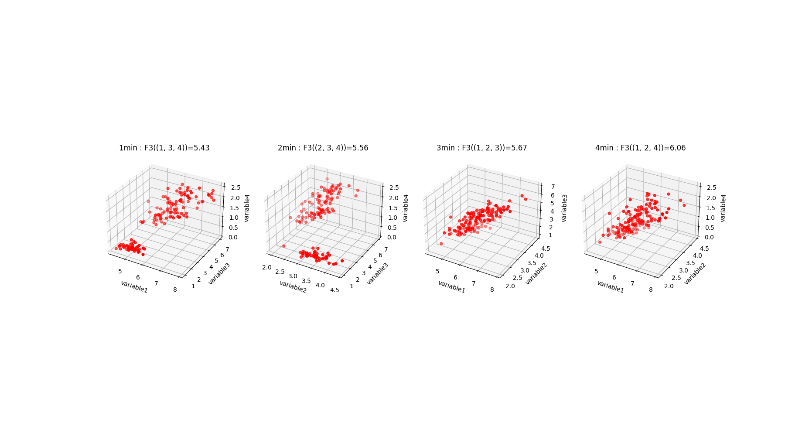
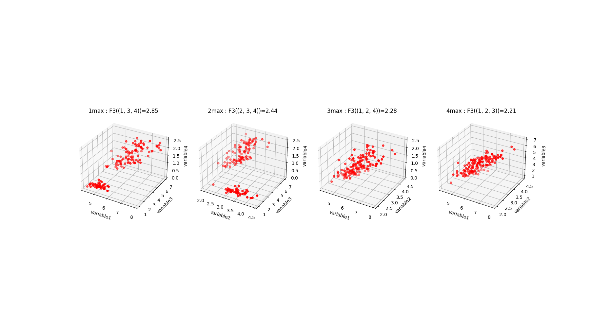
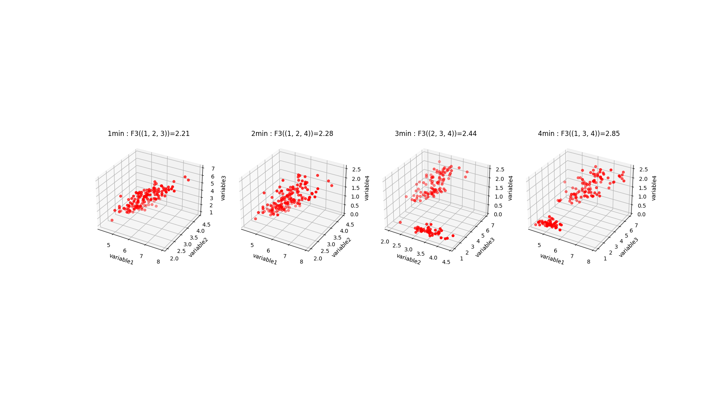
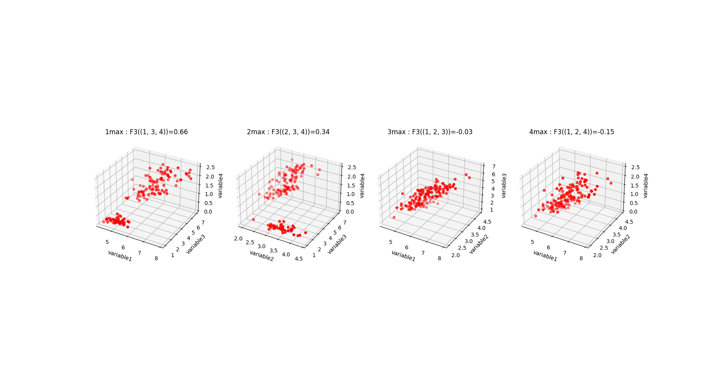
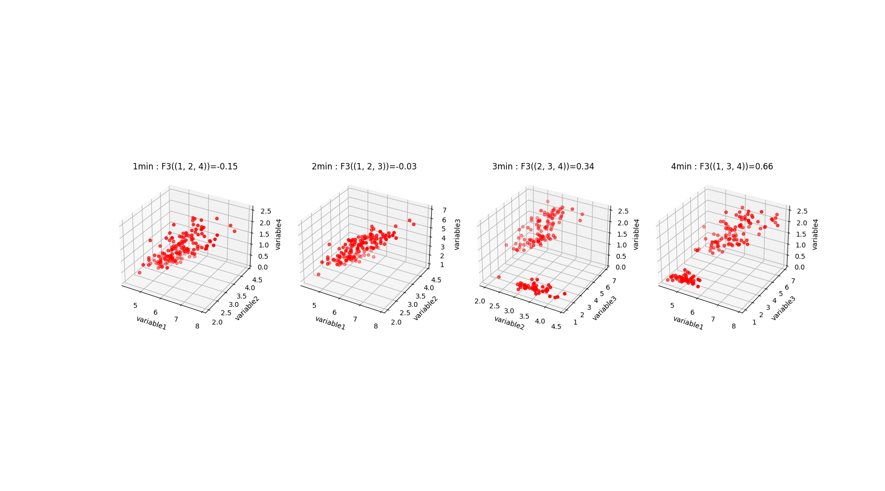
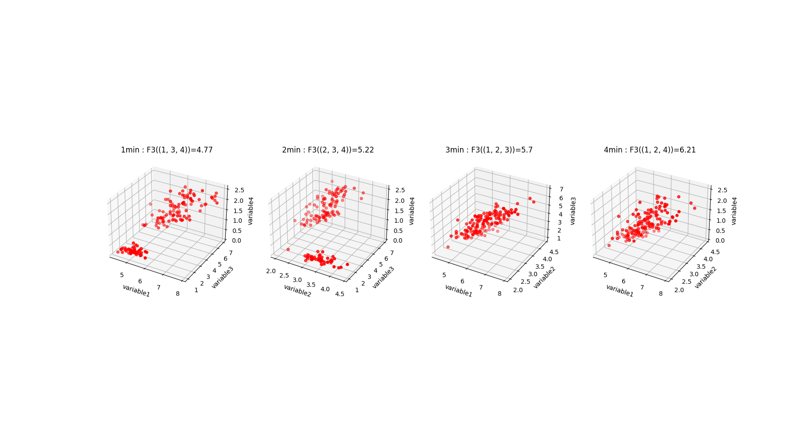

Note
Click here to download the full example code
This is my first example¶
Description of the example.
- 
- 
- 
- 
- 
- 
- 
- 
- 
Out:
sample_size : 150
number of variables or dimension of the analysis: 4
number of tot dimensions: 4
number of values: 9
Percent of tuples processed : 0
Time for CPU(seconds) entropies: 0.00392383600001267
{(4,): 2.9528016441309237, (3,): 2.4902608474907497, (2,): 2.5591245822618114, (1,): 2.8298425472847066, (3, 4): 3.983309507504916, (2, 4): 4.798319817958397, (1, 4): 4.83234271597051, (2, 3): 4.437604597473526, (1, 3): 4.2246575340121835, (1, 2): 4.921846615158947, (2, 3, 4): 5.561696151051504, (1, 3, 4): 5.426426190681815, (1, 2, 4): 6.063697650692486, (1, 2, 3): 5.672729631265195, (1, 2, 3, 4): 6.372515544003377}
undersampling percent in dim 1 = 0.0
undersampling percent in dim 2 = 0.0
undersampling percent in dim 3 = 0.0
undersampling percent in dim 4 = 0.0
the undersampling dimension is 4 with self.p_value_undersampling 0.05
1 max value in dimension 3 is for the tuple (1, 2, 4) with Fk value : 6.063697650692486
2 max value in dimension 3 is for the tuple (1, 2, 3) with Fk value : 5.672729631265195
3 max value in dimension 3 is for the tuple (2, 3, 4) with Fk value : 5.561696151051504
4 max value in dimension 3 is for the tuple (1, 3, 4) with Fk value : 5.426426190681815
1 min value in dimension 3 is for the tuple (1, 3, 4) with Fk value : 5.426426190681815
2 min value in dimension 3 is for the tuple (2, 3, 4) with Fk value : 5.561696151051504
3 min value in dimension 3 is for the tuple (1, 2, 3) with Fk value : 5.672729631265195
4 min value in dimension 3 is for the tuple (1, 2, 4) with Fk value : 6.063697650692486
/home/runner/work/infotopopy/infotopopy/infotopo/infotopo.py:919: MatplotlibDeprecationWarning: Adding an axes using the same arguments as a previous axes currently reuses the earlier instance. In a future version, a new instance will always be created and returned. Meanwhile, this warning can be suppressed, and the future behavior ensured, by passing a unique label to each axes instance.
plt.subplot(3,3,a)
1 max value in dimension 3 is for the tuple (1, 3, 4) with Fk value : 2.8464788482245647
2 max value in dimension 3 is for the tuple (2, 3, 4) with Fk value : 2.440490922831981
3 max value in dimension 3 is for the tuple (1, 2, 4) with Fk value : 2.278071122984956
4 max value in dimension 3 is for the tuple (1, 2, 3) with Fk value : 2.206498345772073
1 min value in dimension 3 is for the tuple (1, 2, 3) with Fk value : 2.206498345772073
2 min value in dimension 3 is for the tuple (1, 2, 4) with Fk value : 2.278071122984956
3 min value in dimension 3 is for the tuple (2, 3, 4) with Fk value : 2.440490922831981
4 min value in dimension 3 is for the tuple (1, 3, 4) with Fk value : 2.8464788482245647
Time for CPU(seconds) Mutual Information: 7.020100002819163e-05
{(4,): 2.9528016441309237, (3,): 2.4902608474907497, (2,): 2.5591245822618114, (1,): 2.8298425472847066, (3, 4): 1.4597529841167574, (2, 4): 0.7136064084343374, (1, 4): 0.9503014754451202, (2, 3): 0.6117808322790355, (1, 3): 1.0954458607632729, (1, 2): 0.4671205143875712, (2, 3, 4): 0.34464930199815047, (1, 3, 4): 0.6590214721005863, (1, 2, 4): -0.14704272471792645, (1, 2, 3): -0.03215113834219352, (1, 2, 3, 4): -0.01401708722266548}
/home/runner/work/infotopopy/infotopopy/infotopo/infotopo.py:649: MatplotlibDeprecationWarning: Adding an axes using the same arguments as a previous axes currently reuses the earlier instance. In a future version, a new instance will always be created and returned. Meanwhile, this warning can be suppressed, and the future behavior ensured, by passing a unique label to each axes instance.
plt.subplot(3,3,a)
/home/runner/work/infotopopy/infotopopy/infotopo/infotopo.py:706: MatplotlibDeprecationWarning: Adding an axes using the same arguments as a previous axes currently reuses the earlier instance. In a future version, a new instance will always be created and returned. Meanwhile, this warning can be suppressed, and the future behavior ensured, by passing a unique label to each axes instance.
plt.matshow(matrix_distrib_infomut, cmap='jet', aspect='auto', extent=[0,self.dimension_max,minima_tot-0.1,maxima_tot+0.1], norm=LogNorm(), fignum= num_fig)
1 max value in dimension 3 is for the tuple (1, 3, 4) with Fk value : 0.6590214721005863
2 max value in dimension 3 is for the tuple (2, 3, 4) with Fk value : 0.34464930199815047
3 max value in dimension 3 is for the tuple (1, 2, 3) with Fk value : -0.03215113834219352
4 max value in dimension 3 is for the tuple (1, 2, 4) with Fk value : -0.14704272471792645
1 min value in dimension 3 is for the tuple (1, 2, 4) with Fk value : -0.14704272471792645
2 min value in dimension 3 is for the tuple (1, 2, 3) with Fk value : -0.03215113834219352
3 min value in dimension 3 is for the tuple (2, 3, 4) with Fk value : 0.34464930199815047
4 min value in dimension 3 is for the tuple (1, 3, 4) with Fk value : 0.6590214721005863
/home/runner/work/infotopopy/infotopopy/infotopo/infotopo.py:802: MatplotlibDeprecationWarning: Adding an axes using the same arguments as a previous axes currently reuses the earlier instance. In a future version, a new instance will always be created and returned. Meanwhile, this warning can be suppressed, and the future behavior ensured, by passing a unique label to each axes instance.
plt.matshow(matrix_distrib_info, cmap='jet', aspect='auto', extent=[0,self.dimension_max,minima_tot-0.1,maxima_tot+0.1], norm=LogNorm(), fignum= num_fig)
The conditional information at dim 2
OrderedDict([((2, 3, 4), 0.267131530280885), ((1, 4, 3), 0.29128000334453397), ((2, 4, 3), 0.36895710643618695), ((1, 3, 4), 0.4364243886626866), ((1, 2, 3), 0.4992716527297647), ((1, 2, 4), 0.6141632391054976), ((2, 3, 1), 0.643931970621229), ((3, 4, 1), 0.8007315120161711), ((2, 4, 1), 0.8606491331522639), ((1, 4, 2), 1.0973442001630467), ((3, 4, 2), 1.1151036821186069), ((1, 3, 2), 1.1275969991054664)])
/home/runner/work/infotopopy/infotopopy/infotopo/infotopo.py:862: MatplotlibDeprecationWarning: Adding an axes using the same arguments as a previous axes currently reuses the earlier instance. In a future version, a new instance will always be created and returned. Meanwhile, this warning can be suppressed, and the future behavior ensured, by passing a unique label to each axes instance.
plt.subplot(3,3,a)
/home/runner/work/infotopopy/infotopopy/infotopo/infotopo.py:987: MatplotlibDeprecationWarning: Adding an axes using the same arguments as a previous axes currently reuses the earlier instance. In a future version, a new instance will always be created and returned. Meanwhile, this warning can be suppressed, and the future behavior ensured, by passing a unique label to each axes instance.
plt.subplot(3,3,a)
1 max value in dimension 3 is for the tuple (1, 2, 4) with Fk value : 6.2107403754104125
2 max value in dimension 3 is for the tuple (1, 2, 3) with Fk value : 5.704880769607389
3 max value in dimension 3 is for the tuple (2, 3, 4) with Fk value : 5.217046849053354
4 max value in dimension 3 is for the tuple (1, 3, 4) with Fk value : 4.767404718581229
1 min value in dimension 3 is for the tuple (1, 3, 4) with Fk value : 4.767404718581229
2 min value in dimension 3 is for the tuple (2, 3, 4) with Fk value : 5.217046849053354
3 min value in dimension 3 is for the tuple (1, 2, 3) with Fk value : 5.704880769607389
4 min value in dimension 3 is for the tuple (1, 2, 4) with Fk value : 6.2107403754104125
Percent of tuples processed : 0
The path of maximal mutual-info Nb 1 is :
[3, 4, 1, 2]
The path of minimal mutual-info Nb 1 is :
[4, 2, 1]
The path of maximal mutual-info Nb 2 is :
[2, 4, 3, 1]
The path of minimal mutual-info Nb 2 is :
[1, 2, 4]
The path of maximal mutual-info Nb 3 is :
[1, 3, 4, 2]
The path of minimal mutual-info Nb 3 is :
[2, 1, 4]
The path of maximal mutual-info Nb 4 is :
[4, 3, 1, 2]
The path of minimal mutual-info Nb 4 is :
[3, 2, 1]
import pandas as pd
import seaborn as sns
import timeit
from infotopo import Infotopo
from infotopo.io import load_data_sets
dataset_type = 1 # if dataset = 1 load IRIS DATASET # if dataset = 2 load Boston house prices dataset # if dataset = 3 load DIABETES dataset
## if dataset = 4 CAUSAL Inference data challenge http://www.causality.inf.ethz.ch/data/LUCAS.html # if dataset = 5 Borromean dataset
# if dataset = 6 Digits dataset MNIST
dataset, nb_of_values = load_data_sets( dataset_type)
dimension_max = dataset.shape[1]
dimension_tot = dataset.shape[1]
sample_size = dataset.shape[0]
forward_computation_mode = False
work_on_transpose = False
supervised_mode = False
sampling_mode = 1
deformed_probability_mode = False
if dataset_type == 6:
forward_computation_mode = True
dimension_max = 5
print("sample_size : ",sample_size)
print('number of variables or dimension of the analysis:',dimension_max )
print('number of tot dimensions:', dimension_tot)
print('number of values:', nb_of_values)
information_topo = Infotopo(dimension_max = dimension_max,
dimension_tot = dimension_tot,
sample_size = sample_size,
work_on_transpose = work_on_transpose,
nb_of_values = nb_of_values,
sampling_mode = sampling_mode,
deformed_probability_mode = deformed_probability_mode,
supervised_mode = supervised_mode,
forward_computation_mode = forward_computation_mode)
# Nentropy is dictionary (x,y) with x a list of kind (1,2,5) and y a value in bit
start = timeit.default_timer()
Nentropie = information_topo.simplicial_entropies_decomposition(dataset)
stop = timeit.default_timer()
print('Time for CPU(seconds) entropies: ', stop - start)
if dataset_type == 1 or dataset_type == 5:
print(Nentropie)
information_topo.entropy_simplicial_lanscape(Nentropie)
information_topo = Infotopo(dimension_max = dimension_max,
dimension_tot = dimension_tot,
sample_size = sample_size,
work_on_transpose = work_on_transpose,
nb_of_values = nb_of_values,
sampling_mode = sampling_mode,
deformed_probability_mode = deformed_probability_mode,
supervised_mode = supervised_mode,
forward_computation_mode = forward_computation_mode,
dim_to_rank = 3, number_of_max_val = 4)
if dataset_type != 5:
dico_max, dico_min = information_topo.display_higher_lower_information(Nentropie, dataset)
# Ninfomut is a dictionary (x,y) with x a list of kind (1,2,5) and y a value in bit
Ntotal_correlation = information_topo.total_correlation_simplicial_lanscape(Nentropie)
dico_max, dico_min = information_topo.display_higher_lower_information(Ntotal_correlation, dataset)
start = timeit.default_timer()
Ninfomut = information_topo.simplicial_infomut_decomposition(Nentropie)
stop = timeit.default_timer()
print('Time for CPU(seconds) Mutual Information: ', stop - start)
if dataset_type == 1 or dataset_type == 5:
print(Ninfomut)
information_topo.mutual_info_simplicial_lanscape(Ninfomut)
if dataset_type != 5:
dico_max, dico_min = information_topo.display_higher_lower_information(Ninfomut, dataset)
adjacency_matrix_mut_info = information_topo.mutual_info_pairwise_network(Ninfomut)
mean_info, mean_info_rate =information_topo.display_mean_information(Ninfomut)
# CONDITIONAL INFO OR ENTROPY
NcondInfo = information_topo.conditional_info_simplicial_lanscape(Ninfomut)
information_topo.display_higher_lower_cond_information(NcondInfo)
# ENTROPY vs. ENERGY LANDSCAPE
information_topo.display_entropy_energy_landscape(Ntotal_correlation, Nentropie)
information_topo.display_entropy_energy_landscape(Ninfomut, Nentropie)
# Information distance and volume LANDSCAPE
Ninfo_volume = information_topo.information_volume_simplicial_lanscape(Nentropie, Ninfomut)
dico_max, dico_min = information_topo.display_higher_lower_information(Ninfo_volume, dataset)
adjacency_matrix_info_distance = information_topo.mutual_info_pairwise_network(Ninfo_volume)
# Information paths - Information complex
Ninfomut, Nentropie = information_topo.fit(dataset)
information_topo.information_complex(Ninfomut)
Total running time of the script: ( 0 minutes 10.000 seconds)